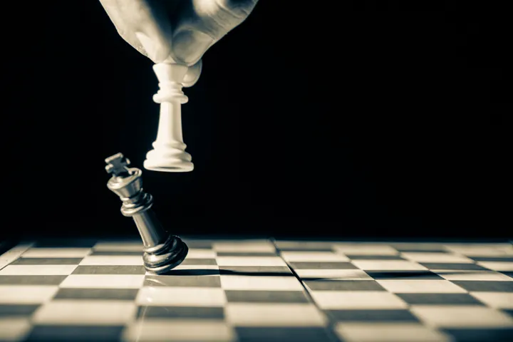
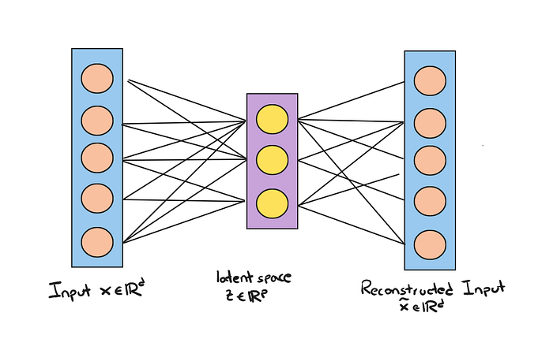
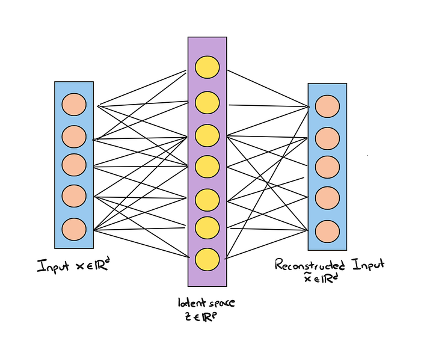
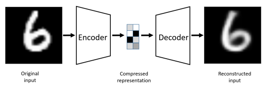

Hands-on Generative AI with GANs using Python: Autoencoders
Start with Autoencoders to better understand GANs.
August 31, 2024 · GAN, Autoencoders, GenAI, Python

Introduction
In recent years, generative models have gained popularity due to Artificial Intelligent’s ability to produce synthetic instances that are almost indistinguishable from real data. Neural Networks like Chat GPT, which can generate text, and DALLE, which can generate wholly original graphics, may be familiar to you.
The website thispersondoesnotexist.com, where an AI-generated image of a person who doesn’t exist shows each time you visit the link, is one well-known example of generative networks. This is only one among many illustrations of the amazing possibilities of generative AI.
Over time, Generative AI has evolved and as research advanced different architectures were born to solve many application cases. But in order to start learning about the topic of generative AI, you need to be familiar with one architecture: Generative Adversarial Networks (GANs).
GANs Overview
The ultimate goal of a generative network is to generate new data that has the same distribution as its training set. Generative networks are typically considered part of unsupervised learning in machine learning because they do not require labelled data. The Generative Adversarial Network (GAN) concept, proposed by Ian Goodfellow in 2014, is a popular paper “Generative Adversarial Nets”.
Initially, the GAN architecture was based on fully connected layers that were trained to generate low-resolution images, such as handwritten digits. Since then, there have been numerous improvements and applications of GANs. They have been used for tasks such as image-to-image translation, image super-resolution, and image inpainting, where the network learns to reconstruct missing parts of an image.
GANs can also be used in supervised and semi-supervised learning tasks. For example, Conditional GANs can generate data based on certain conditions, such as generating images of different animals based on user input. Semi-supervised GANs use labelled data to improve the quality of generated data.
The applications of GANs extend far beyond image generation. These models have been used in NLP (Natural Language Processing), music generation, and even drug discovery! The potential of generative models is huge, and as technology continues to advance, we can expect even more innovative applications to emerge.
GANs are attractive because they can generate data with the same distribution as their training data.
Autoencoders Before GANs
To fully understand how these Generative Adversarial Networks work, it’s helpful to first start with Autoencoders. Autoencoders are a type of neural network that can compress and decompress training data, making them useful for data compression and feature extraction.
Standard Autoencoders are not capable of generating new data, but they serve as a useful starting point for understanding GANs. Autoencoders consist of two concatenated networks — an encoder network and a decoder network. The encoder network receives a d-dimensional input feature x and encodes it into a p-dimensional vector z. In other words, the role of the encoder is to learn how to model the function z= f(X). Vector z is also called latent vector. Usually, the dimension of the latent vector is lower than the original input vector, so p<d
The decoder network takes the encoded vector z and reconstructs the original input feature x. The objective of the autoencoder is to minimize the difference between the original input feature and the reconstructed feature. By doing so, the autoencoder learns to compress and decompress the input data while preserving its essential features.
Let’s see a picture representing the autoencoder architecture.

While autoencoders can be used for data compression and feature extraction, they are not capable of generating new data like GANs.
In this simple example, both the encoder and decoder are simple linear layers that compress and decompress space. More complex architectures can have multiple layers and contain different types of layers, such as convolutional ones if we are applying the model to images.
Let’s see a trivial implementation of autoencoder in PyTorch.
class AutoEncoder(nn.Module):
def __init__(self, **kwargs):
super().__init__()
self.encoder = nn.Linear(
in_features=kwargs["input_shape"], out_features=128
)
self.decoder = nn.Linear(
in_features=128, out_features=kwargs["input_shape"]
)
def forward(self, x):
latent_vector = torch.relu(self.encoder(x))
reconstructed = torch.relu(self.decoder(latent_vector))
return reconstructedThe AutoEncoder class extends nn.Module as usual and consists of an encoder and a decoder both linear layers, which take an input a vector x of size input_shape (e.g. 784) reduces it to a latent space of size 128 and eventually the original size vector is reconstructed.
Other Types of AutoEncoders
We have seen that commonly the size of the latent vector is smaller than that of the input vector, so compression takes place, i.e., p<d. These types of autoencoders are called undercomplete.
But we can create a latent vector with a size larger than the input vector, p>d. Of course, overcomplete autoencoders! But what are they used for? They can be used for noise reduction.
During the training of these networks, noise is added to the input data, think of images that are blurred for example, and the network must be able to reconstruct the noise-free image. This particular architecture is called denoising autoencoder.

Real Example of Autoencoder
Let us now look at an example of how to implement a more complex Autoencoder using PyTorch to generate synthetic data similar to the MNIST dataset.
First of all as usual we install and import the libraries we will need.
!pip install torchvision
!pip install torch
from torchvisionimport datasets
from torchvisionimport transforms
import torch
import matplotlib.pyplotas pltNow we simply import the dataset. In Pytorch this is very easy because the library provides methods to download the dataset quickly. So we instantiate both the dataset and then the dataloader that we will need to train the network. We also define a transformation to convert images to tensors when they are processed by the network.
dataset = datasets.MNIST(root = "./data",
train = True,
download = True,
transform = tensor_transform)
loader = torch.utils.data.DataLoader(dataset = dataset,
batch_size = 64,
shuffle = True)
tensor_transform = transforms.ToTensor()Now it’s time to create the AutoEncoder class as we did before. But in this case, both the encoder and the decoder will be deeper since they will be composed of more layers so as to better capture image features.
class AutoEncoder(torch.nn.Module):
def __init__(self):
super().__init__()
self.encoder = torch.nn.Sequential(
torch.nn.Linear(28 * 28, 128),
torch.nn.ReLU(),
torch.nn.Linear(128, 64),
torch.nn.ReLU(),
torch.nn.Linear(64, 36),
torch.nn.ReLU(),
torch.nn.Linear(36, 18),
torch.nn.ReLU(),
torch.nn.Linear(18, 9)
)
self.decoder = torch.nn.Sequential(
torch.nn.Linear(9, 18),
torch.nn.ReLU(),
torch.nn.Linear(18, 36),
torch.nn.ReLU(),
torch.nn.Linear(36, 64),
torch.nn.ReLU(),
torch.nn.Linear(64, 128),
torch.nn.ReLU(),
torch.nn.Linear(128, 28 * 28),
torch.nn.Sigmoid()
)
def forward(self, x):
encoded = self.encoder(x)
decoded = self.decoder(encoded)
return decodedAs you can see it is not much more complicated than the trivial example seen at the beginning.
Now as is always the case when we train a model, we instantiate the class, and define a loss and an optimizer. MSELoss and Adam here.
model = AutoEncoder()
loss_function = torch.nn.MSELoss()
optimizer = torch.optim.Adam(model.parameters(),
lr = 1e-1,
weight_decay = 1e-6)The moment of training the network has come. We have to iterate over our dataloader and reshape the input so it matches the model architecture. We then calculate the output and loss obtained, and save everything aside on a list that we can plot at the end of the training.
epochs = 25
losses = []
for epoch in range(epochs):
for (image, _) in loader:
image = image.reshape(-1, 28*28)
reconstructed = model(image)
loss = loss_function(reconstructed, image)
optimizer.zero_grad()
loss.backward()
optimizer.step()
losses.append(loss)
plt.style.use('fivethirtyeight')
plt.xlabel('Iteration')
plt.ylabel('MSE-Loss')
plt.plot(losses[-100:])Okay, our network is trained! Now we can plot the original images against their reconstructed images from the network.
plt.imshow(dataset[0])
plt.imshow(model(dataset[0].reshape(-1, 28, 28))
Final Thoughts
Learning about Autoencoders is very helpful to understand how GANs work. In this article, we saw a little bit about the theory of these architectures and then we saw how they can be used to reconstruct the output of MNIST images. They’re a lot of fun to use, plus they’re also useful for various reasons, some of which include compressing and decompressing input or denoising of images as we’ve seen. In the next article, I will explain how Autoencoders are related to GANs and we will see how to implement them. Follow me for future articles!😉
The End
Marcello Politi
This article was published on Towards Data Science